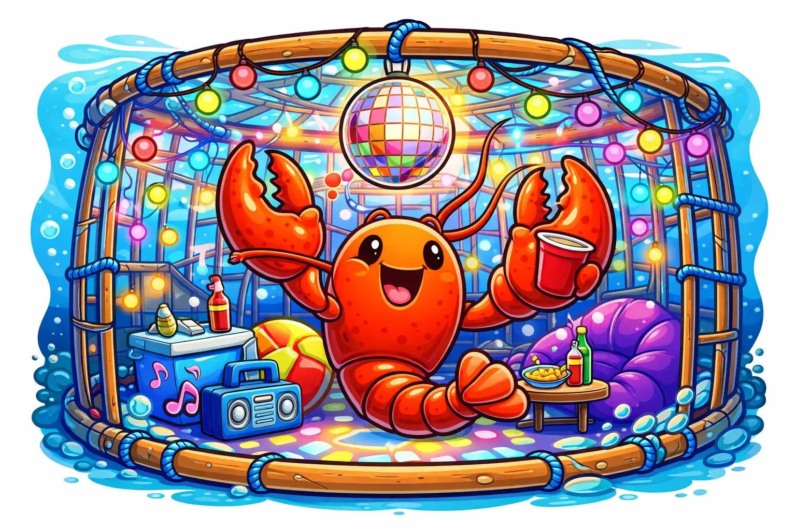

OpenClaw
Standardizing secure agent-to-system interfaces with open specifications that the community can build on.

Building a safe harbor for autonomous agents.
Explore Our WorkWelcome to LobsterTrap! We are an open-source community dedicated to the art and science of AI Agent Security and Safety.
As agents gain more autonomy, who's making sure they play nice? We are. LobsterTrap provides the armor, the cages, and the guardrails to keep your systems safe and your data protected.
Whether you're a security researcher, a developer building agentic systems, or just someone who wants to understand what happens when AI meets the real world — you're in the right place.
No claws, just collaboration.
Our core focus areas combine LLM capabilities with systems engineering to secure the agentic future.
Standardizing secure agent-to-system interfaces with open specifications that the community can build on.
Containment methods that prevent agent escape from controlled environments, keeping untrusted code isolated.
Secure authorization and credential handling for autonomous agents, ensuring least-privilege access.
Multi-layered protections against adversarial prompt manipulation and injection attacks.
Enforcing resource boundaries and runtime constraints so agent workloads stay within safe limits.
No application-level guardrails. Agent isolation is enforced by the Linux kernel — Landlock, seccomp-BPF, namespaces, cgroups, and SELinux. Once configured, containment is irrevocable by the agent process and survives daemon crashes.
An AI agent isn't just another container. The syscalls it makes — which files it opens, which binaries it runs, which network connections it initiates — are decided at runtime by an LLM, not by compiled program logic.
| Traditional Process | Agentic Workload | |
|---|---|---|
| Syscall sequence | Determined by compiled code | Determined by LLM at runtime |
| Files accessed | Known at design time | Chosen by LLM at runtime |
| Subprocesses spawned | Fixed set (e.g., worker pool) | Arbitrary binaries — gcc, curl, rm |
| Network endpoints | Configured statically | Chosen by LLM at runtime |
| Trust model | Trusted code, trusted control flow | Trusted identity, untrusted control flow |
An agentic workload combines the broad syscall surface of an interactive shell, the autonomous execution of a daemon, and the untrusted control flow of a container. No existing Linux isolation primitive addresses this combination — which is the gap we're filling.
There are many ways to get involved with LobsterTrap. Dive in and help us build the future of agent security.
Browse our experimental repositories and see what we're building. From proof-of-concepts to production tools.
Browse on GitHubHave an idea for an AI-native firewall? Want to debate sandboxing strategies? Jump into our GitHub Discussions.
Start a conversationHelp us define the standard for secure agent interfaces. OpenClaw is our flagship framework — and it needs your expertise.
View OpenClaw